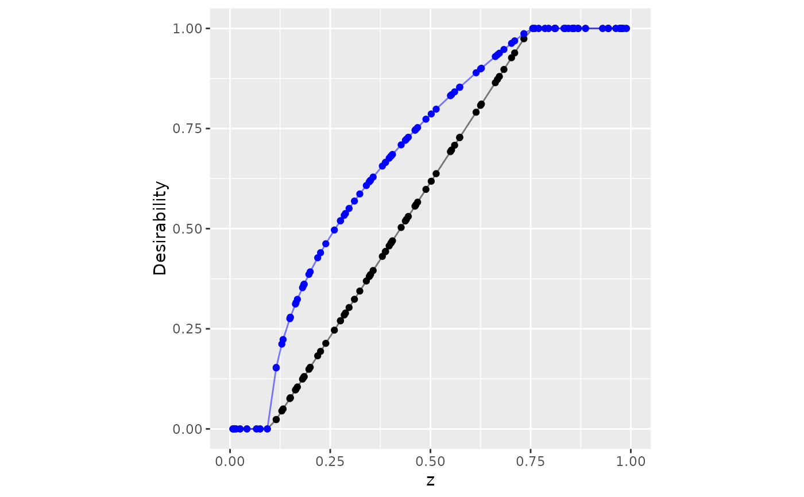
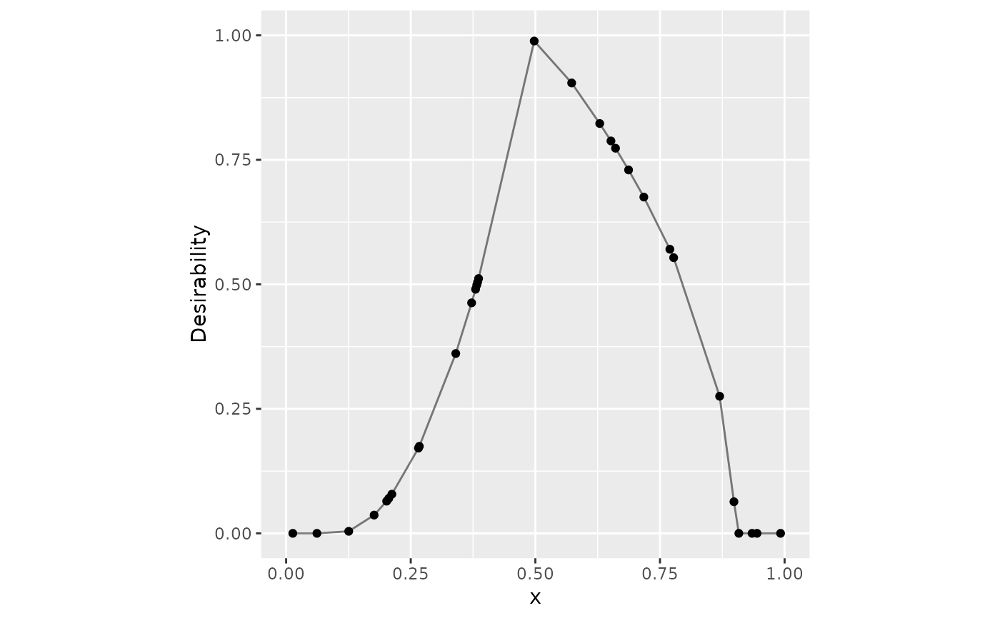
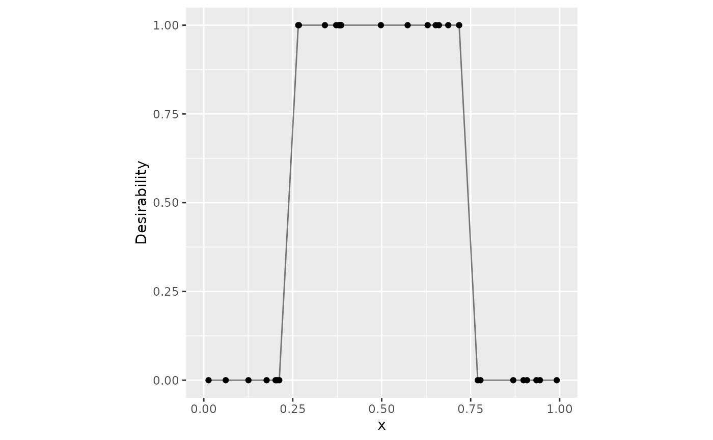
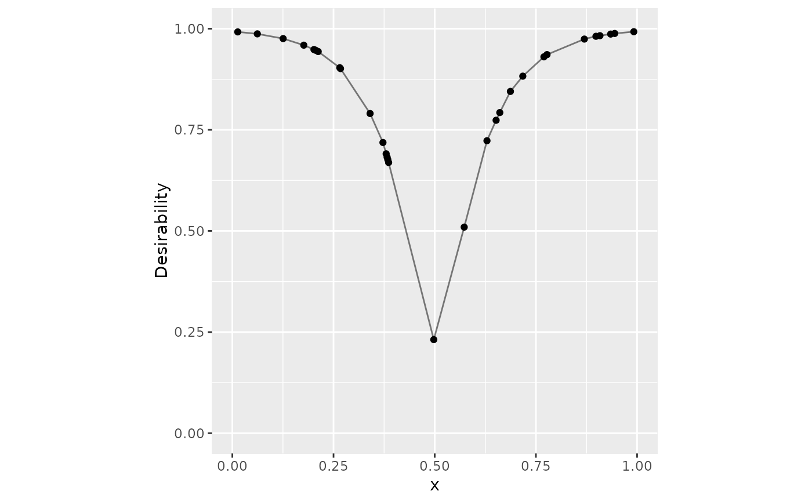
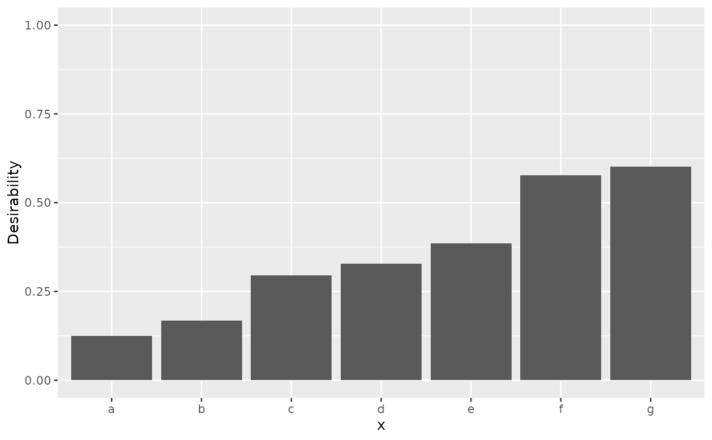

inline_desirability.RdDesirability functions map some input to a [0, 1] scale where zero is
unacceptable and one is most desirable. The mapping depends on the situation.
For example, d_max() increases desirability with the input while d_min()
does the opposite.
Currently, only the desirability functions defined by Derringer and Suich (1980) are implemented.
d_max(x, low, high, scale = 1, missing = NA_real_) d_min(x, low, high, scale = 1, missing = NA_real_) d_target( x, low, target, high, scale_low = 1, scale_high = 1, missing = NA_real_ ) d_box(x, low, high, missing = NA_real_) d_custom(x, x_vals, desirability, missing = NA_real_) d_category(x, categories, missing = NA_real_)
| x | A vector of data to compute the desirability function |
|---|---|
| low, high, target | Single numeric values that define the active ranges of desirability. |
| scale, scale_low, scale_high | A single numeric value to rescale the desirability function. |
| missing | A single numeric value on |
| x_vals, desirability | Numeric vectors of the same length that define the
desirability results at specific values of |
| categories | A named list of desirability values that match all
possible categories to specific desirability values. Data that are not
included in |
A numeric vector on [0, 1] where larger values are more
desirable.
Derringer, G. and Suich, R. (1980), Simultaneous Optimization of Several Response Variables. Journal of Quality Technology, 12, 214-219.
library(dplyr) library(ggplot2) set.seed(1) dat <- tibble(x = sort(runif(30)), y = sort(runif(30))) d_max(dat$x[1:10], 0.1, 0.75)#> [1] 0.00000000 0.00000000 0.03931553 0.11777962 0.15643374 0.16303781 #> [7] 0.17252696 0.25462871 0.25726257 0.36976769#> # A tibble: 30 × 3 #> x y d_x #> <dbl> <dbl> <dbl> #> 1 0.0134 0.0233 0 #> 2 0.0618 0.0707 0 #> 3 0.126 0.0995 0.0393 #> 4 0.177 0.108 0.118 #> 5 0.202 0.186 0.156 #> 6 0.206 0.245 0.163 #> 7 0.212 0.316 0.173 #> 8 0.266 0.407 0.255 #> 9 0.267 0.411 0.257 #> 10 0.340 0.438 0.370 #> # … with 20 more rowsset.seed(2) tibble(z = sort(runif(100))) %>% mutate( no_scale = d_max(z, 0.1, 0.75), easier = d_max(z, 0.1, 0.75, scale = 1/2) ) %>% ggplot(aes(x = z)) + geom_point(aes(y = no_scale)) + geom_line(aes(y = no_scale), alpha = .5) + geom_point(aes(y = easier), col = "blue") + geom_line(aes(y = easier), col = "blue", alpha = .5) + lims(x = 0:1, y = 0:1) + coord_fixed() + ylab("Desirability")# ------------------------------------------------------------------------------ # Target example dat %>% mutate( triangle = d_target(x, 0.1, 0.5, 0.9, scale_low = 2, scale_high = 1/2) ) %>% ggplot(aes(x = x, y = triangle)) + geom_point() + geom_line(alpha = .5) + lims(x = 0:1, y = 0:1) + coord_fixed() + ylab("Desirability")# ------------------------------------------------------------------------------ # Box constraints dat %>% mutate(box = d_box(x, 1/4, 3/4)) %>% ggplot(aes(x = x, y = box)) + geom_point() + geom_line(alpha = .5) + lims(x = 0:1, y = 0:1) + coord_fixed() + ylab("Desirability")# ------------------------------------------------------------------------------ # Custom function v_x <- seq(0, 1, length.out = 20) v_d <- 1 - exp(-10 * abs(v_x - .5)) dat %>% mutate(v = d_custom(x, v_x, v_d)) %>% ggplot(aes(x = x, y = v)) + geom_point() + geom_line(alpha = .5) + lims(x = 0:1, y = 0:1) + coord_fixed() + ylab("Desirability")# ------------------------------------------------------------------------------ # Qualitative data set.seed(3) groups <- sort(runif(10)) names(groups) <- letters[1:10] tibble(x = letters[1:7]) %>% mutate(d = d_category(x, groups)) %>% ggplot(aes(x = x, y = d)) + geom_bar(stat = "identity") + lims(y = 0:1) + ylab("Desirability")# ------------------------------------------------------------------------------ # Apply the same function to many columns at once (dplyr > 1.0) dat %>% mutate(across(c(everything()), ~ d_min(., .2, .6), .names = "d_{col}"))#> # A tibble: 30 × 4 #> x y d_x d_y #> <dbl> <dbl> <dbl> <dbl> #> 1 0.0134 0.0233 1 1 #> 2 0.0618 0.0707 1 1 #> 3 0.126 0.0995 1 1 #> 4 0.177 0.108 1 1 #> 5 0.202 0.186 0.996 1 #> 6 0.206 0.245 0.985 0.888 #> 7 0.212 0.316 0.970 0.709 #> 8 0.266 0.407 0.836 0.483 #> 9 0.267 0.411 0.832 0.472 #> 10 0.340 0.438 0.649 0.405 #> # … with 20 more rows